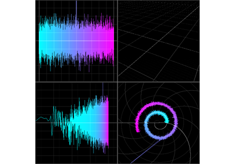

Grid Layouts# Examples of using the GridWidget to layout elements in a SceneCanvas.  Multiple ViewBoxes on a Grid Multiple ViewBoxes on a Grid Simple use of a grid layout Simple use of a grid layout More complex grid layout More complex grid layout Multiple Line Views on a Grid Multiple Line Views on a Grid Another Grid Layout Another Grid Layout Plot-like Grid Layout Plot-like Grid Layout